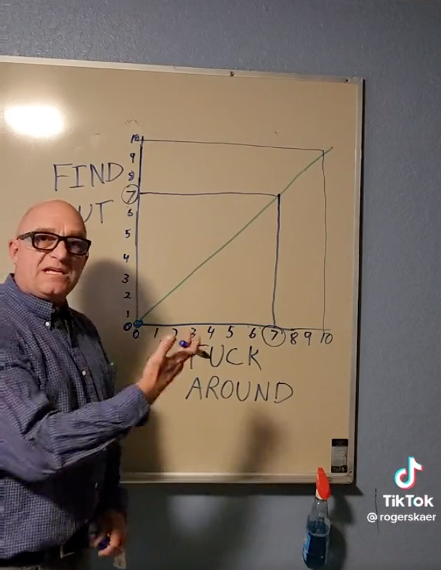

Unrestrained exploration can be a valuable learning opportunity.
Most people associate fucking around and finding out as a threat, a phrase used to warn people that what they're doing now is going to lead them down a not-so-good path in the near future. Keep doing what you're doing and you'll get rocked, kid.
But changing the "and" to a "to" completely changes the meaning from a warning to a philosophy. It becomes a method of learning, and a good one at that.
When I first started my job, I was scared to touch the equipment. Each furnace was worth between $1-3 million, and the products they were processing at any given time were a similar amount. One wrong move and I just scrapped an entire lot. I timidly watched technicians do their work and made sure I wasn't touching anything that could get me in trouble.
One day I had an epiphany: I would never learn or develop if I continued this way. This was coupled with a mentor's quote that I heard a mere few days later:
If you ain't breakin' shit, you ain't tryin'
Mark Zuckerberg has a similar quote:
Unless you are breaking stuff, you aren't moving fast enough
The following Monday my mindset—and with it, actions—changed immensely. I charged through hurdles, only stopping to ask when the risk was high enough that is risked moderate or severe consequences. I made changes I deemed required and important; I asked fewer questions and pushed ahead; I stopped waiting around for someone else to do things and made what I wanted to happen. It was exhilarating, like I had found the magic pill and secret recipe to productivity all in a single afternoon thought.
There is an obvious fine line between being exploratory and being reckless; location differs based on risk, magnitude of impact, industry, etc. Regardless, this prompts the question: how much should one fuck around? How valuable is fucking around?
The answer, based on my experience, is incredibly valuable.
Multiple outcomes can be had from fucking around:
The first outcome is obvious: do what you think is right, get it right, no harm done. Apply the identical solution to the problem the next time it arises.
The second outcome is riskier: damage can be done, but the lesson is likely to stick.
The third outcome is the riskiest: damage will absolutely be done, but the extent varies. The lesson will surely never be forgotten.
Despite its (sarcastic) name, fucking around need not be very dangerous. It does need to be explorative, varied, novel, and have some risk.
Fuck around and find out. Break shit and learn from it. Stop worrying about doing everything safe and right and go do. Explore both the known and unknown and everything in between. Experiment with different methods and approaches. Get exposed to a moderate amount of risk and learn what it's like to feel danger and with it, excitement. Venture outside of comfort zones and become accustomed to being uncomfortable.